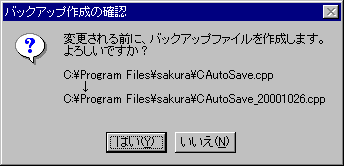

ファイルを更新（保存）する際に、現存のファイルを別の名前で残しておきたいときにこの機能を使います。
□詳細設定する
□
保存時にバックアップを作成する
このオプションを有効にすると、保存時に、更新前のファイルのバックアップを作成します。
(例) readme.txt → readme.bak
○
拡張子を.bakに変更したもの
このオプションを有効にすると、更新前のファイルの拡張子を".bak"に変更して保存しておきます。
○
拡張子を連番(b00〜b98)に変更したもの
このオプションを有効にすると、更新前のファイルの拡張子を".b00"から連番で変更して保存します。
指定した世代数分の過去のファイルを保存しておきます。
◎
ファイル名の後ろに日付・時刻を付加したもの
このオプションを有効にすると、更新前のファイル名の後ろに日付・時刻を付加して保存しておきます。
(例) 2001年6月28日付の autoexec.bat を7月5日に保存
→ バックアップファイル名は autoexec_20010705.bat
○
ファイル名の後ろに前回の保存時の日付・時刻を付加したもの
このオプションを有効にすると、ファイル名の後ろに付加する日時はファイルのタイムスタンプを使います。
(例) 2001年6月28日付の autoexec.bat を7月5日に保存
→ バックアップファイル名は autoexec_20010628.bat
■
西暦 ■
月 ■
日 □
時 □
分 □
秒
ファイル名の後ろに日付・時刻を付加したもの、ファイル名の後ろに前回の保存時の日付・時刻を付加したもの を選択した場合に日付・時刻をどれくらい付加するかを指定します。
□
指定フォルダに作成する
このオプションを有効にすると、バックアップは指定されたフォルダに作成されます。
このオプションを無効にすると、バックアップは編集中のファイルと同じフォルダに作成されます。
□
リムーバブルメディアのみ
編集中のファイルがリムーバブルメディアにある場合のみ指定フォルダにバックアップを作成します。
フォルダ名
指定フォルダに作成するをチェックしたときにバックアップを作成するフォルダを設定できます。
メタ文字列を含むことができます。(sakura:2.0.8.0以降)
□
バックアップファイルをごみ箱に放り込む
このオプションを有効にすると、作成したバックアップファイルをごみ箱の中に放り込みます。
バックアップファイルの作成場所
| ローカルドライブにあるファイル | リムーバブルメディアにあるファイル |
□指定フォルダに作成する
□リムーバブルメディアのみ
□バックアップファイルをごみ箱に放り込む
| 編集中のファイルのあるフォルダ | 編集中のファイルのあるフォルダ |
■指定フォルダに作成する
□リムーバブルメディアのみ
□バックアップファイルをごみ箱に放り込む
| 指定フォルダ | 指定フォルダ |
■指定フォルダに作成する
■リムーバブルメディアのみ
□バックアップファイルをごみ箱に放り込む
| 編集中のファイルのあるフォルダ | 指定フォルダ |
□指定フォルダに作成する
□リムーバブルメディアのみ
■バックアップファイルをごみ箱に放り込む
| 編集中のファイルのあるフォルダ→ごみ箱 | 編集中のファイルのあるフォルダ |
■指定フォルダに作成する
□リムーバブルメディアのみ
■バックアップファイルをごみ箱に放り込む
| 指定フォルダ→ごみ箱 | 指定フォルダ |
■指定フォルダに作成する
■リムーバブルメディアのみ
■バックアップファイルをごみ箱に放り込む
| 編集中のファイルのあるフォルダ→ごみ箱 | 指定フォルダ |
■
作成前に確認する
このオプションを有効にすると、バックアップ作成前に確認します。
